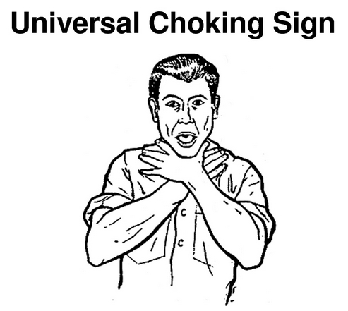

Choking
Choking is a result of an object blocking a person’s airway preventing them from bringing air into t heir lungs to breathe. As the object can be small and still cause choking, this is a common concern for most parents of small children because children are likely to put random objects in their mouths. Adults usually start choking from food, with peanuts being the most common cause of choking. People have died choking on food. There are also health conditions such as laryngospasm which can obstruct the airway or simulate choking.
Common signs that a person is choking include the inability to talk nor can the person cough forcefully. Another sign is that the person has noisy breathing or difficulty breathing. If the person’s skin, lips or nails become discolored this could be a sign that they are not getting enough oxygen in their blood. If you have any questions as to the severity of the choking incident, call emergency services immediately.
Choking can happen to anyone. Alexander Alekhine, Attila the Hun, Subroto Mukerjee (an Air Marshall) Tommy Dorsey, Jimmie Foxx, Tennessee Williams, Anthony Grey, the Earl of Harold and Christy Brown have all died from choking.
This is what a choking person will look like:

Figure: Universal Choking Sign
If you are choking, the first thing you should do is signal to those around you using the universal sign of choking: place your hands across each other at the base of your throat. This will inform those around you that you are in need of assistance.
If you are choking and alone, call 911 immediately. To perform blows on yourself if you are choking, you need to make a fist with one hand and place in just above your belly button, or navel. Lean over a hard surface, like a chair or countertop. Then you’ll press your fist inward and upward.
There are a few ways to help a person who is choking. The purpose of these actions is to help remove the object that is blocking the airway. The most immediate action is blows to the back with the heal of your hand (right below your palm) or performing the Heimlich maneuver. To perform this on an adult, stand behind the person and wrap your arms around their waist. If the person is obese or pregnant you can try this closer to the breast plate. You make a ball with your hand, like a fist, and place it in the area above their belly button, or navel. Place your other hand over your fist. Then you press into the person’s abdomen with at an upward angle. You can try cycling between 5 blows and 5 thrusts. If the object is in their mouth and you can see it, you can try to take it out.

If the person who is choking has become unconscious, instruct another person with you to call 911 while you perform the following steps. The first thing you will do is lower the person onto their back on the floor. Then you will carefully clear the airway of any visible obstructions. If after this step the person is still unresponsive, begin CPR. This is 30 chest compressions followed by 2 breaths.
If the person is an infant or a baby younger than age 1, you will have to try a different procedure. First sit down and hold the baby face down. Then pat firmly but gently the middle of their back with the heel of your hand. Next hold the infant face-up with your forearm if the above did not work. Give quick chest compressions with two fingers at the their breastbone. Repeat or try infant CPR.
If nothing else works, an emergency tracheotomy may be in order. This means cutting the victim's neck and inserting a tube to allow air in. Otherwise, the victim may not be able to breath and die. If done incorrectly, this can end the person's life but it can also save it if done correctly. Unless you are a trained medical professional you should not attempt this.